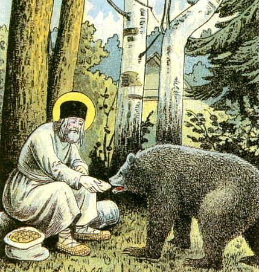

Saint Séraphim de Sarov
« Acquiers la paix intérieure, et des milliers d'âmes trouveront le salut autour de toi. »
Un starets de la forêt russe
Higoumène, ermite et mystique, saint Séraphim est l'une des figures les plus aimées de la spiritualité orthodoxe russe. Retiré pendant près de trente ans dans la forêt de Sarov, il accueillit à la fin de sa vie d'innombrables pèlerins avec ces simples mots : « Ma joie, le Christ est ressuscité ! »
Enfance à Koursk · 1754
Prokhor Moshnine naît le 19 juillet 1754 à Koursk, dans une famille de marchands pieux. Très jeune, il échappe miraculeusement à la mort après une chute du haut d'un clocher en construction— événement que la tradition interprète comme un premier signe de la protection divine sur sa vie.
À dix ans, une grave maladie le laisse agonisant. La Vierge de Koursk, portée en procession devant sa demeure, lui apparaît en songe et lui promet la guérison. Il se rétablit, et dès lors son cœur se tourne vers le monastère.
Entrée au monastère de Sarov · 1778
À vingt‑quatre ans, il quitte le monde pour entrer au monastère de la Dormition de Sarov, dans la forêt de Tambov. Après huit années d'épreuves et d'obéissance, il reçoit la tonsure monastique sous le nom de Séraphim — « l'enflammé » — le 13 août 1786.
Ordonné hiérodiacre, puis hiéromoine, il se fait remarquer par la ferveur de sa prière et la douceur de ses manières. Les frères racontent qu'il célébrait la Divine Liturgie avec des larmes, comme s'il voyait ce que les autres ne voyaient pas.
La retraite dans la forêt · 1794 – 1825
En 1794, avec la bénédiction de son higoumène, il se retire dans une cabane à cinq verstes du monastère, au cœur de la forêt. Pendant trente ans, il y mène une vie d'ermite : il cultive un petit jardin, se nourrit d'herbes, et prie debout, jour et nuit, sur un rocher, à l'imitation de saint Siméon le Stylite.
Il survit à l'attaque de brigands qui le laissent pour mort— blessure dont il restera voûté jusqu'à la fin de sa vie. Il pardonne à ses agresseurs et refuse qu'ils soient poursuivis.
Durant cette période il accueille, selon la tradition, un ours qu'il nourrit de sa main : image aimée de l'iconographie russe de la paix retrouvée entre l'homme et la création.

Le starets · 1825 – 1833
En 1825, après dix ans de silence complet (molchanie), il rouvre la porte de sa cellule. À partir de cet instant, une foule innombrable afflue : paysans, nobles, évêques, tsar même, tous viennent chercher conseil, prière, consolation.
Il reçoit chacun avec ces mots qui sont devenus célèbres : « Ma joie, le Christ est ressuscité ! » — et cela en toute saison, non seulement à Pâques, car il vivait dans la joie pascale permanente.
Son entretien avec Nicolas Motovilov, transcrit plus tard, demeure l'un des sommets de la théologie mystique orthodoxe : il y enseigne que le but de la vie chrétienne est l'acquisition du Saint‑Esprit.
Dormition et canonisation · 1833 · 1903
Il s'endort dans le Seigneur le 2 janvier 1833 (ancien style) devant l'icône de la Mère de Dieu « Joie de toutes les joies », à genoux en prière. Il avait soixante‑dix‑huit ans.
Canonisé en 1903 sous le règne du tsar Nicolas II, en présence d'une foule de plus de cent mille pèlerins, il devient rapidement l'un des saints les plus vénérés du monde orthodoxe. Ses reliques, longtemps perdues à l'époque soviétique, furent retrouvées en 1991 et solennellement reportées à Diveyevo.
« Acquiers la paix intérieure, et des milliers d'âmes trouveront le salut autour de toi. »
« Le but de la vie chrétienne consiste en l'acquisition du Saint‑Esprit de Dieu. Tout le reste — le jeûne, la prière, les aumônes — ne sont que des moyens. »
« Ma joie, le Christ est ressuscité ! »
« Il n'y a rien de pire que le péché, rien de plus terrible et de plus destructeur que l'esprit de découragement. »
« Dieu est un feu qui réchauffe et embrase le cœur. Si nous sentons en nous le froid, appelons le Seigneur : il viendra et réchauffera notre cœur d'un amour parfait. »
« Sois comme un chérubin, doux envers tous, attentif à toi‑même, et ferme contre les pensées mauvaises. »
Une présence quotidienne
dans notre paroisse
Les offices célébrés chaque semaine, les icônes, les reliques — saint Séraphim reste, pour la communauté de Montgeron, un ami proche et un intercesseur. Son tropaire, son canon et son acathiste sont chantés tout au long de l'année.
Deux dates majeures ponctuent ce lien : le 15 janvier, anniversaire de sa dormition, et le 1ᵉʳ août, jour de la découverte de ses reliques. Chacune donne lieu à une fête paroissiale : Divine Liturgie solennelle, procession autour de l'église, et repas fraternel.